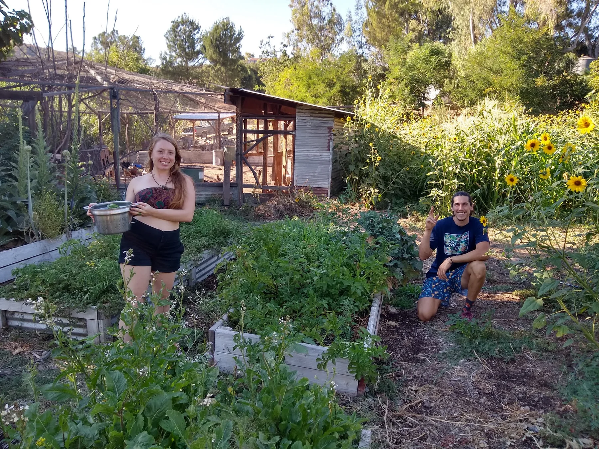
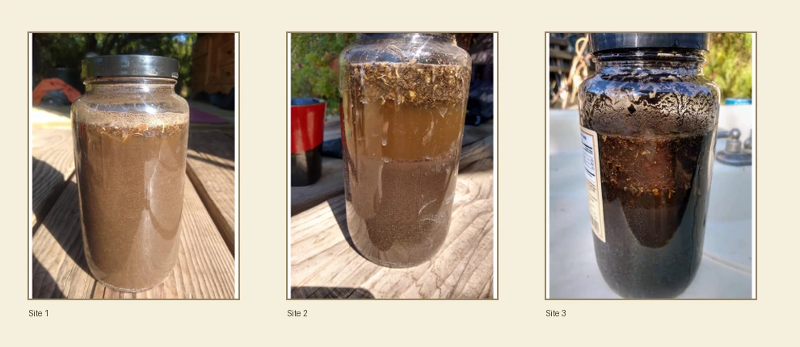
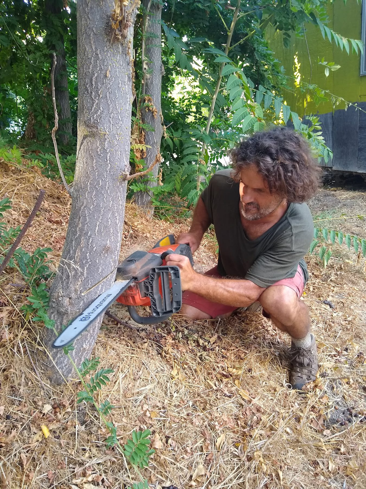
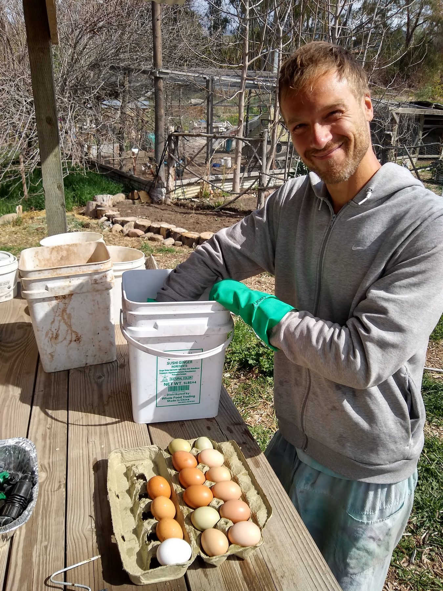
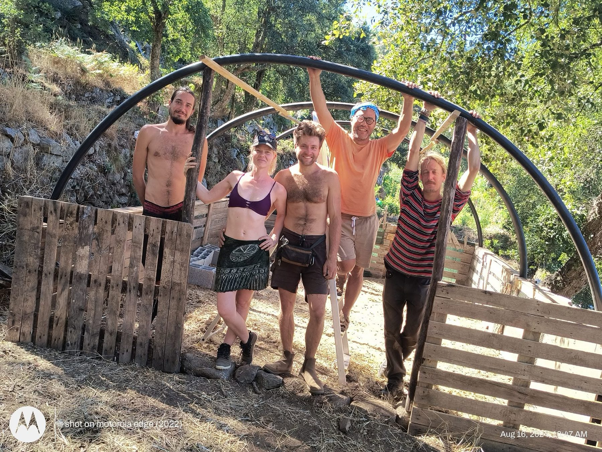
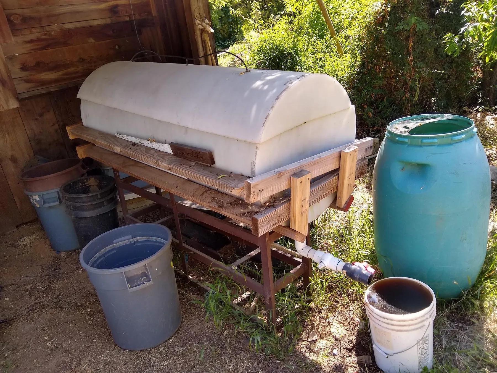

A half-acre garden, two acres of orchard, forty chickens, bees, worms, kitchen scraps and heavy clay soil form one living fertility system.

Harvesting together in the main garden
A working food landscape
Production was already woven through the farm
The 2022 workbook did not begin with an empty site. Full Circle Farm already had mature orchards, eight raised beds, chickens, bees, worms, kitchen compost, household gardens and decades of accumulated knowledge. The design challenge was to connect those parts more clearly and make them easier to sustain.
½ acremain garden
2 acresorchards
8raised beds
~40chickens
2½ dozeneggs per day
330trees inventoried
01 · The productive zones
Food at several distances from the kitchen
Daily crops and animals belonged close to the center of activity. Mature tree crops could be visited less often, while each dwelling added smaller gardens of its own.
Zone 1
Kitchen, scraps and daily attention
Food preparation generated roughly two five-gallon buckets of organic material each day for a community of about twenty people. The design called for clearer separation between chicken food, worm food and compost material.
Zone 2
Half-acre vegetable garden
Eight raised beds, full sun, frequent irrigation, chickens nearby and daily visits made the garden the farm’s most intensive production area.
Zone 3
Two acres of orchard
Persimmons, citrus, loquats, pomegranates, mulberries, olives and other tree crops stored decades of biological investment and needed mulch, pruning and succession planning.
Perennial abundance Established fruit trees represented years of stored care, water and fertility.
The productive landscape did not end at the garden gate. Deanna Jaya Nakosteen coordinated the purchasing, cooking rhythm and pantry systems that turned ingredients into a dependable daily meal for the entire community.
The weekly supply line Jaya’s yellow car carried organic produce from the Ojai farmers market and Rainbow Bridge back to Full Circle.
Every day, two residents cooked a beautiful vegetarian meal for everyone and cleaned the kitchen afterward. Jaya ran the program and maintained the larger logistical structure behind it.
Bulk supplies arrived four times each year: big bags of rice and lentils, coconut oil, dry goods, toilet paper, and a remarkably extensive collection of herbs and spices. These purchases reduced cost, supported shared cooking and kept the household supplied between deliveries.
Every Sunday, often accompanied by one helper, Jaya drove to the farmers market and filled the car with organic produce. A stop at Rainbow Bridge, Ojai’s organic market, completed the week’s provisioning.
This was social permaculture expressed through food: shared labor, pooled resources, reliable nourishment, and one person’s long commitment to making the system work.
Samples were taken from the south, north and east ends of the garden. The workbook found similar heavy clay at all three sites, with relatively slow drainage but soil already enriched by years of mulch and fertility inputs.

Jar tests from three garden locations All three were classified as clay by both settling and texture-by-feel tests.
The strongest system was not any single compost pile. It was the relationship among shared meals, animals, woody biomass, garden residues and living soil.
01Kitchen scraps
Two buckets daily from shared meals.
→
02Chickens & worms
Convert selected scraps into eggs, manure and castings.
→
03Compost & chips
Organic matter becomes mulch and soil amendment.
→
04Garden & orchard
Food and biomass return to the community.

Woody biomass Three or four truckloads of chips were brought in each year, while the chipper converted prunings and fire-clearance material into mulch.

Chickens turn fertility into food Kitchen scraps, garden residues and daily care returned as eggs, manure and active soil-building work.
Spring
Cover and awaken
Plant cover crops, protect bare soil and support the season’s strongest growth.
Summer
Shade and conserve
Maintain deep mulch, reduce evaporation and place water where roots can use it.
Autumn
Return the harvest
Chop and drop crop residues, spread wood chips and prepare beds for cooler weather.
Winter
Build structure
Use rain and cooler conditions to establish roots, compost and long-term soil cover.
Animals were not separate attractions. They performed jobs within the farm system—although every animal system also depended on daily care, feed, protection and good placement.

Chickens
About forty birds
The flock produced roughly two and a half dozen eggs per day, ate kitchen scraps and scratched organic material. The garden fence was essential because the same behavior that turns compost can destroy beds.
Bees
Pollination across the farm
Managed bees provided honey and linked flowering plants across gardens, orchards and wild edges. Continuous bloom benefited both the hive and native pollinators.

Red wigglers
A smaller, cleaner waste stream
The worm bin processed selected scraps and produced worm tea used around orchard trees. It worked best when protected from heat and overloaded inputs.
The design preserved mature food trees while proposing clearer paths, shaded gathering areas, a mandala garden and a gradual shift away from invasive or water-demanding canopy species.
Reshape the main garden around a six-pointed star and central shaded gazebo so that production and human comfort reinforce one another.
02
Finish the fence
Complete gates and chicken-wire boundaries to keep chickens, rabbits and other wildlife from undoing daily garden work.
03
Plant succession
Retain productive mature trees while gradually replacing invasive and high-water species with food, shade, native and nitrogen-support trees.
04
Learning garden
Over time, turn the productive landscape into a place where visitors and community members can learn regenerative gardening directly.
07 · Food sovereignty
“Be happy and garden.”
The workbook’s ambition was larger than maximizing yield. It imagined a community that could feed itself more fully, share work and meals, preserve surplus, teach visitors and reduce dependence on fragile outside systems.
Existing in 2022
A strong base, not yet self-sufficient
A beautiful garden and mature orchards
Shared monthly food program for residents
Daily eggs, kitchen scraps and compost resources
Farmers-market and local-store dependence remained